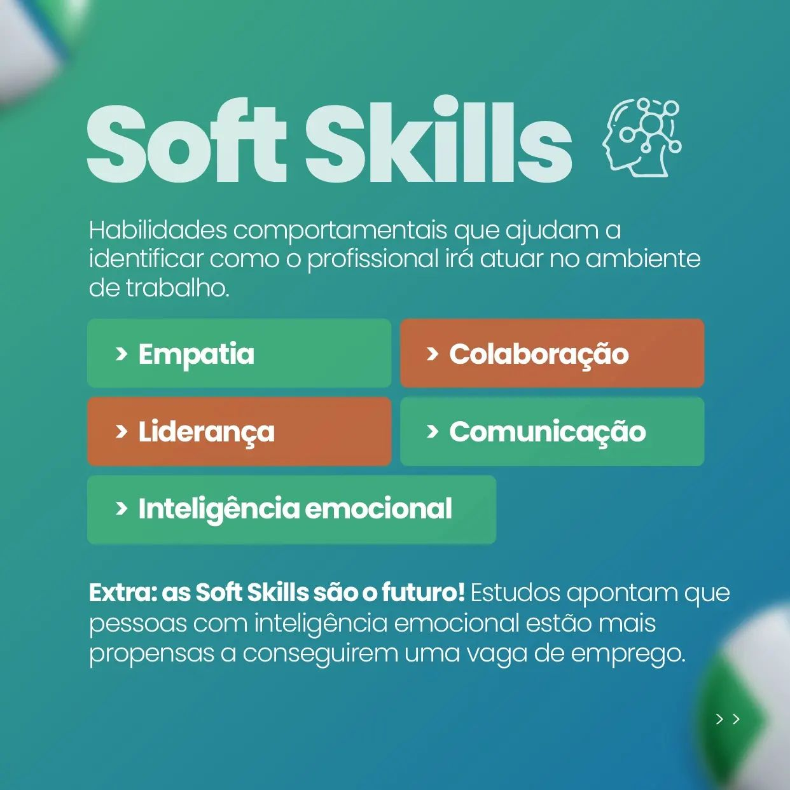
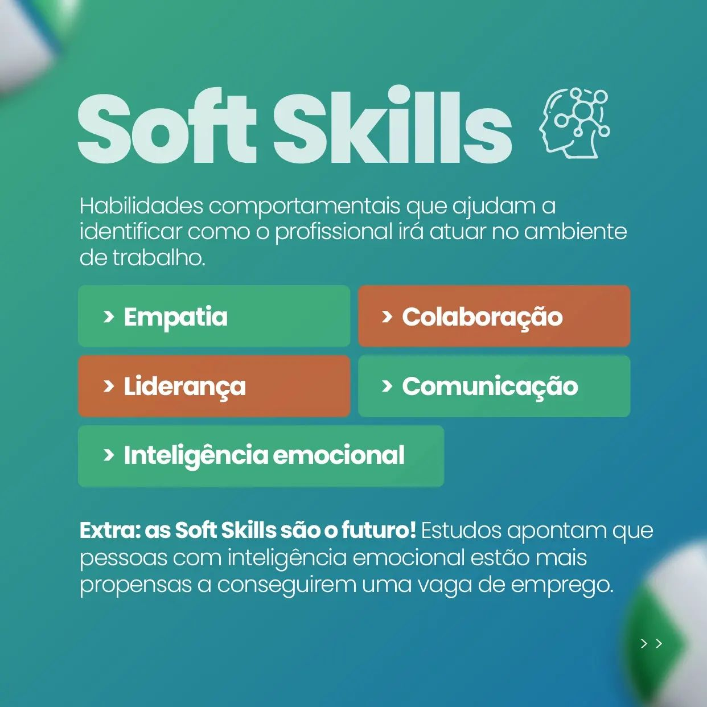

Marketing
Meu primeiro contato com o marketing digital foi através do curso Instagram Skills do Efeito Orna em 2020.
No mesmo ano, fui chamada para integrar a equipe de marketing de duas campanhas políticas, gerenciando e fazendo planejamento para as redes sociais. Em janeiro de 2021, fiz consultoria de redes sociais para a agência Notre Assessoria, analisando o posicionamento digital de seus clientes.
CAPCUT
INSHOT
LIGHTROOM
CANVA
MICROSOFT OFFICE
APLICAÇÕES GOOGLE
planejamento, criatividade e resultados
Campanha presidencial (Lula 2022)
repórter e creator
Produzi mais de 100 vídeos para plataformas digitais de contas independentes e oficiais. Roteirizei conteúdos transmídiáticos para TV e redes sociais.
Campanha Política (2020)
social media
Elaborei e executei o planejamento das redes oficiais da candidata a prefeita municipal, Fátima Nunes. Dentre minhas funções, destacam-se gravação e edição de vídeos, roteirização, ações com influenciadores digitais e gerenciamento completo das redes sociais.

Casa Esportiva
social media e coordenadora de marketing
Coordenei todo o setor de comunicação da empresa, supervisionei embaixadores de mais de 10 lojas espalhadas pelo Nordeste, negociei ações de marketing com marcas parceiras e criei estratégias de campanha junto à agência de assessoria.
Matiz Tintas
social media
Desenvolvi planejamento e execução para o Instagram da Matiz Tintas. A periodicidade da conta era diária com dinâmica nos stories e ações na loja física. Tudo isso através da agência de comunicação Notre Assessoria.
Colégio Gênesis
estrategista
Crio toda a estratégia de conteúdo da empresa na rede social Instagram e atuo na criação de campanhas institucionais.

 

Delineare
social media
Atuei como criadora de conteúdo, fotógrafa, filmmaker e estrategista das redes sociais da empresa pela agência de comunicação Notre Assessoria.
Durante essa jornada foram:
15 contas administradas
Centenas de conteúdos produzidos
Criações com alto alcance
Palestinian Women Organization
Uma organização sem fins lucrativos fundada em 1967 para acolher, empoderar e fortalecer a identidade das mulheres palestinas refugiadas no Egito.
Imersão (09/12 a 11/02)
IDENTITY
EMPOWERMENT
INDEPENDENCE
Os bordados, acessórios e comidas tradicionais são suas fontes de renda. Meu objetivo no projeto, como voluntariada, é ajudar a posicioná-las nas redes sociais e a dar visibilidade à cultura palestina.